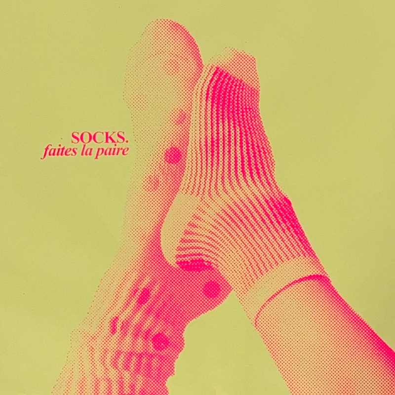
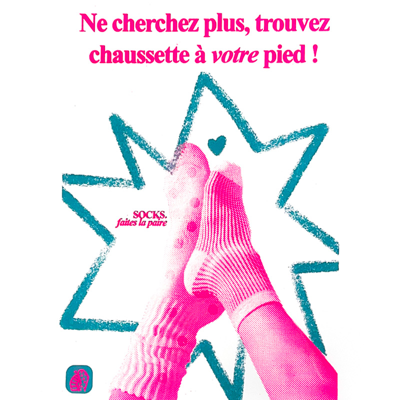
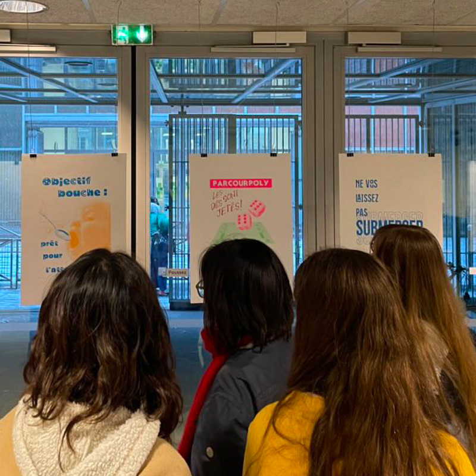
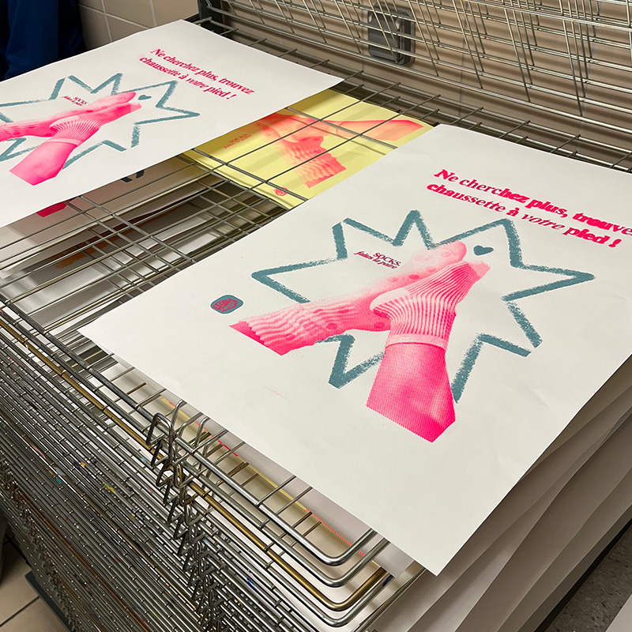
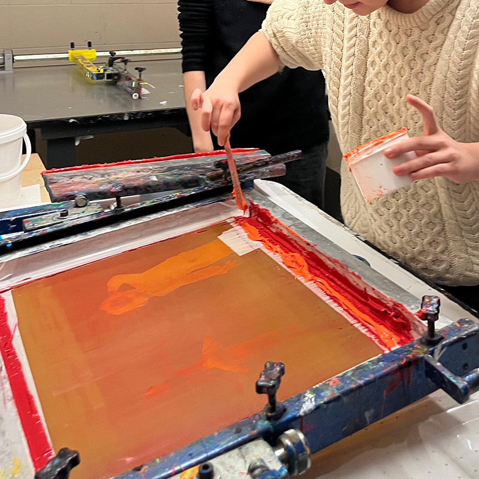
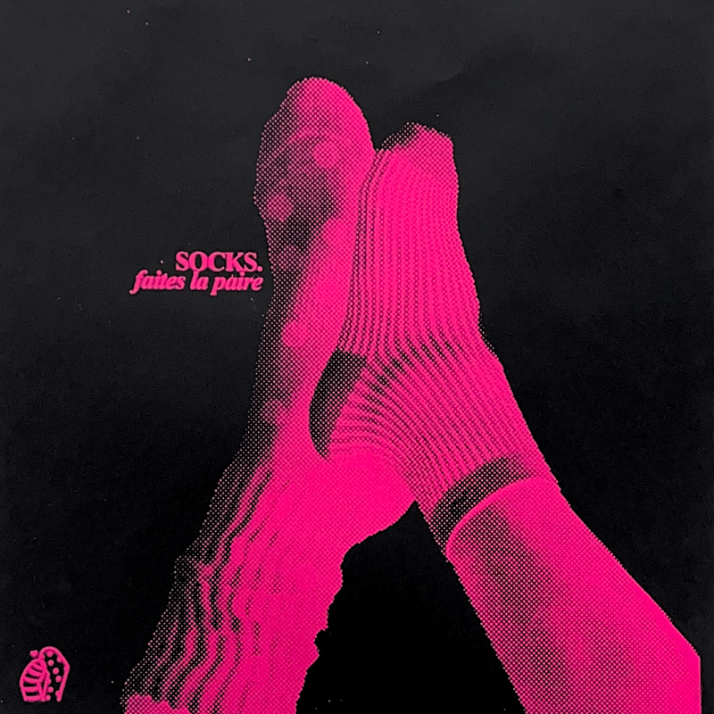

SOCKS,
faites la paire
Affiche publicitaire
2025
Réalisation en binôme d’une affiche publicitaire pour un site de rencontres en ligne intitulé SOCKS.
Projet basé sur l’humour et le détournement : à propos d’un objet du quotidien mêlé a une expression française - «Trouvez chaussure à son pied». Impression bichromie en sérigraphie
Affiche finale exposée ensuite dans le hall de l’ELMAD Auguste Renoir.





